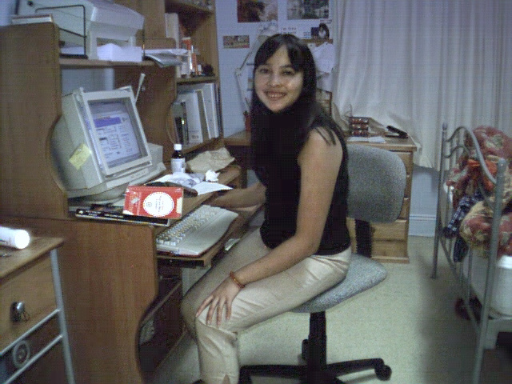

My daughter Victoria

My husband Victor
Victor and Esther at Edmond Velmonte's place
Hi, welcome to my homepage. This web site will be dedicated to ballroom dancing and music. My interest include dancing and music photo of my younger days
I will be updating this site with ballroom dancing information and news as well as music. Hope you visit this site again. If you have any information on ballroom dancing, please do not hesitate to email me.
If you have comments or suggestions, email me at
etetly9@gmail.com